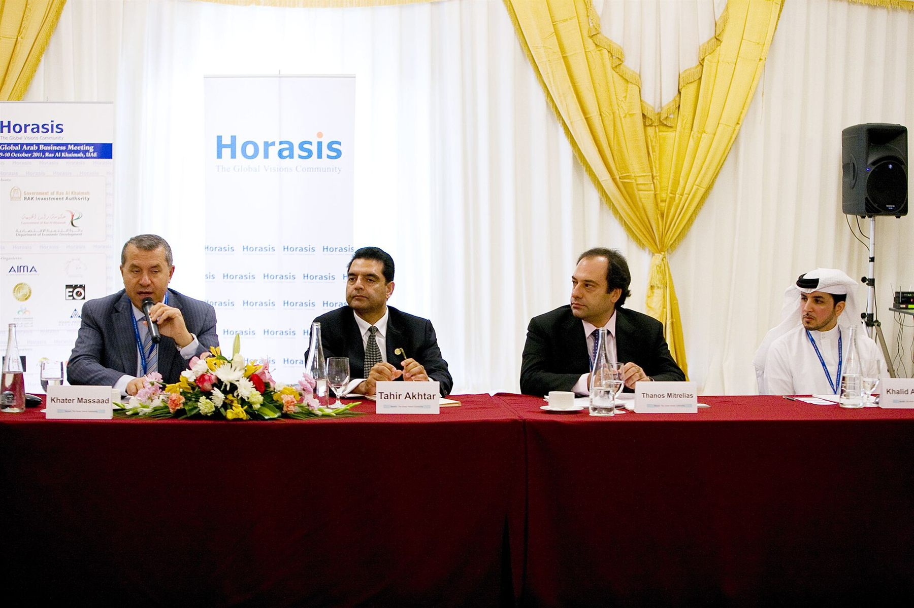

Adviseur en sparringpartner
Wij adviseren Nederlandse ondernemingen over managementvraagstukken, HR-vraagstukken en stakeholder management, en bieden praktische oplossingen voor problemen die zich in de dagelijkse praktijk in China voordoen.
- Managementvraagstukken
- Human Resource-vraagstukken
- Stakeholder Management
- Operationele activiteiten en organisatorische processen
- Mediation